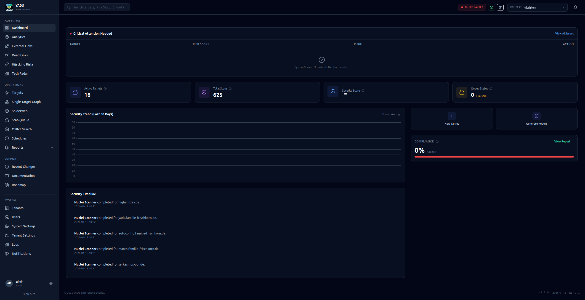
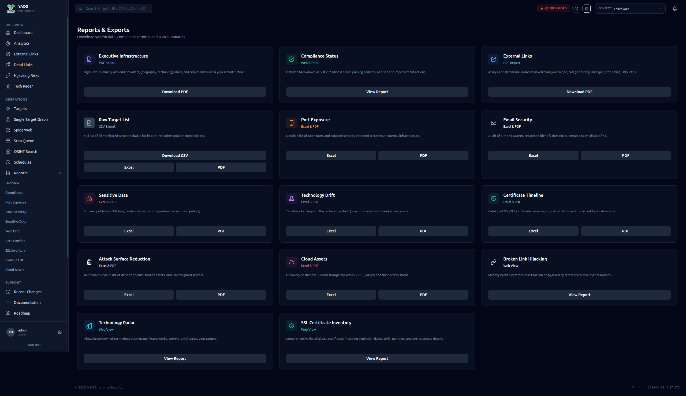
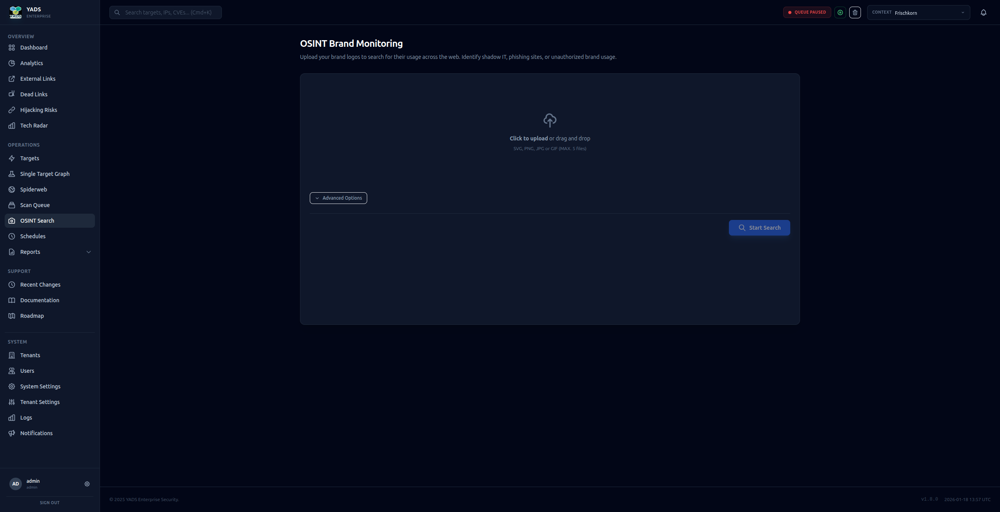

Kommandozentrale
Erhalten Sie einen sofortigen Überblick über Ihre Sicherheitslage. Das YADS-Dashboard aggregiert kritische Risiken, aktive Scan-Fortschritte und Inventarisierungsdaten in einer einzigen Echtzeit-Ansicht.
- ✨ Gesundheits- & Compliance-Noten
- ✨ Echtzeit-Scan-Aktivität
- ✨ Kritische Warnhinweise

Spiderweb Intelligenz
Listen Sie Assets nicht einfach nur auf – verstehen Sie sie. Unser interaktiver Spiderweb-Graph visualisiert die komplexen Beziehungen zwischen Domains, DNS-Einträgen und Hosting-Providern.
Identifizieren Sie Cluster, entdecken Sie Abhängigkeiten von Drittanbietern und finden Sie versteckte Verbindungen.

Management-Berichte
Verwandeln Sie technische Daten in geschäftliche Erkenntnisse. Erstellen Sie umfassende PDF-Berichte für Compliance (SOC2/ISO), SSL-Inventar und Management-Zusammenfassungen.
Berichtstypen ansehen →
Aktive Verteidigung
Bleiben Sie Bedrohungen einen Schritt voraus mit spezialisierten Modulen:
🛡️ E-Mail Sicherheit
SPF/DMARC Analyse
🧟 Defekte Links
Hijacking Prävention
🔭 Tech Radar
Stack Drift Erkennung
👁️ OSINT
Visuelle Markenüberwachung

Alle Scan-Module im Detail
🔎 Reconnaissance
- Domain Discovery: Findet Subdomains via Passive DNS & Brute Force.
- Cloud Assets: Erkennt AWS S3 Buckets, Azure Blobs & GCP Ressourcen.
- Crawler: Tiefgehende Analyse von Webseiten-Strukturen und Links.
- Wayback Machine: Durchsucht historische Daten nach vergessenen Endpunkten.
- Certificate Search: Nutzt crt.sh für Transparenz-Logs.
🛡️ Schwachstellen
- Nuclei Engine: 5000+ Templates für CVEs, Fehlkonfigurationen & Exposures.
- Port Scanner: Stealth Nmap Scans für offene Dienste.
- SSL/TLS Analyse: Prüfung auf schwache Ciphers und ablaufende Zertifikate.
- CVE Lookup: Abgleich installierter Software mit CVE-Datenbanken.
🧠 Intelligence
- Tech Stack: Fingerprinting von CMS, Servern und Frameworks.
- Typosquatting: Überwachung auf Phishing-Domains (z.B. g0ogle.com).
- Visual OSINT: Reverse-Image-Suche für Marken-Logos.
- DNS Monitor: Überwachung von A, AAAA, MX, TXT Records auf Änderungen.
📋 Compliance & Extras
- Compliance Check: SOC2 & ISO 27001 Readiness-Indikatoren.
- Dead Links: Erkennung von Broken Link Hijacking.
- Brand Monitor: Identifiziert Markennennungen im Web.
- E-Mail Security: SPF, DMARC & Spoofing-Schutz Analyse.